AI Academy · Level 2 · Grade 7 · Week 29 · Student lesson
Evidence and Sources
Learn to understand, design, build, test and explain AI systems responsibly.
Project: Transparent Book Recommender
Before you start
AI-1 Week 27: verify a claim using evidence suited to it.
Plan time to read, investigate and explain. Keep predictions separate from observations.
Student lesson · 1 of 18
Your mission
Start with the target: Explain the mechanism and terminology of claim support and citation evaluation. Try the recall before opening notes.
Your learning target
I can explain the mechanism and terminology of claim support and citation evaluation.
I can apply the stated procedure to a new case with a traceable result.
I can identify an assumption or limitation and design a revealing follow-up.
Remember before reading
Close your notes first. A rough first answer helps us choose the right starting point; it is not a score for your ability.
Without opening the old lesson, explain one key idea from Prompt Experiments. Give an example and a mistake that the idea helps you avoid.
Without opening the old lesson, explain one key idea from Image and Voice Pipelines. Give an example and a mistake that the idea helps you avoid.
Without opening the old lesson, explain one key idea from Recommendation Scores. Give an example and a mistake that the idea helps you avoid.
After trying, check the relevant lesson or ask your teacher. Change the part of your explanation that the evidence shows was wrong.
Week 29: Evidence and Sources
Claims require sources matched to the question and checked independently.
THINKER MISSION
Verify a generated answer using two suitable sources.
Thinker name and date:
Readiness for the connected explanation
Recall Building a grounded answer. Explain why a recorded result needs its input conditions and evidence source before it can support a claim.
This week’s end goal
By the end, I can separate citation presence, link validity and support for an exact claim.
Student lesson · 2 of 18
Notice the evidence
Investigate the supplied Evidence and Sources case. Separate observations, given facts and assumptions before choosing an explanation.
PICTURE STORY
Notice → Predict → Explain
Begin with visible evidence. Do not explain more than the picture and information support.
Start with this puzzle
MYSTERY
The learners must use evidence and sources to solve a problem. What information do they have? What decision or calculation do they make? What would count as evidence that it worked?
Three observations (what you can point to):
My prediction and the clue supporting it:
A closer explanation
Citation evaluation checks source existence, exact passage support and coverage of answer claims. A real citation can still be irrelevant.
Begin by writing the question the procedure is intended to answer. Identify the information already supplied, the information it will produce and the information still missing.
These are constructed classroom examples; they do not require live accounts, private records or an external service. Do not treat a plausible explanation as a measured outcome.
Student lesson · 3 of 18
See how it works
Follow the mechanism for Evidence and Sources. Connect each labelled input, deciding step and result.
VISUAL MECHANISM
Input → Process → Output
Trace the information. At each stage, ask what changed and how you could test it.
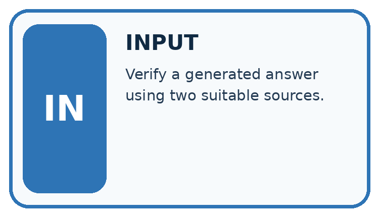
↓
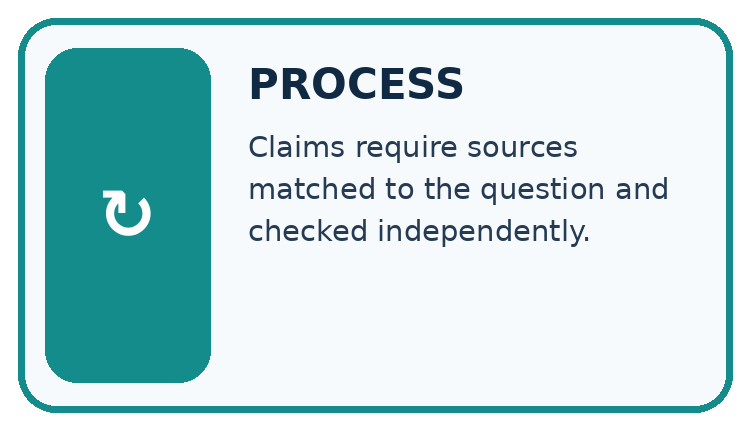
↓
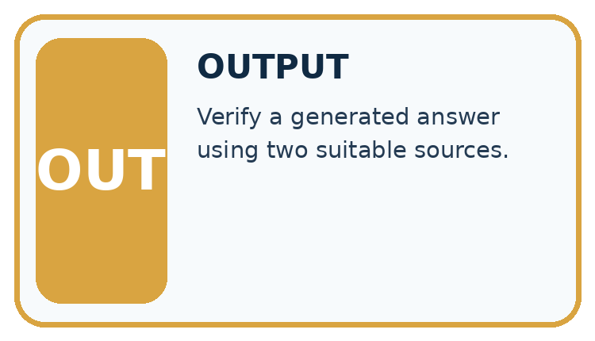
Which stage could fail even when the other two are correct? Explain:
A closer explanation
For this classroom rubric count a claim as supported only when its cited passage entails it. Separately count correct citation links. Use the number of factual claims as the support denominator.
Claim support and citation evaluation — evidence trace
Before applying the procedure, write its units, denominator or decision boundary where relevant. A partner should be able to repeat each step using the same inputs.
If a required input is absent or violates the stated contract, record that condition explicitly instead of quietly replacing it with a convenient value.
Connect the picture and the explanation
Point to the input, the deciding step and the result in this week’s visual. Explain the same step in ordinary words. A picture helps when you can say what each part represents.
Student lesson · 4 of 18
Compare the cases
Compare the supplied cases for Evidence and Sources. Identify the detail that changes the conclusion.
The case to investigate
CASE GALLERY
Four Tests, Four Kinds of Evidence
A system is not understood until it survives more than one comfortable example.


The normal case
NORMAL CASE: predict and name evidence. BOUNDARY CASE: predict and name evidence.


Check missing information
MISSING INFORMATION: predict and name evidence. TRANSFER CASE: predict and name evidence.
Which case is most likely to reveal a hidden assumption? Why?
Change one thing in the pictured case
Change one thing
Change: Change the third claim to “the record does not assess suitability”.
Predicted result
Prediction: That statement accurately describes the supplied record’s limits.
Why the result follows
Reason: R gives pages and shelf only; it contains no suitability assessment.
Student lesson · 5 of 18
Words that unlock the idea
Use the vocabulary of Evidence and Sources to explain a concrete decision, rather than only memorising definitions.
VOCABULARY LAB
Words You Can Use to Reason
A definition matters when you can recognize the idea, use it, and contrast it with a near-miss.
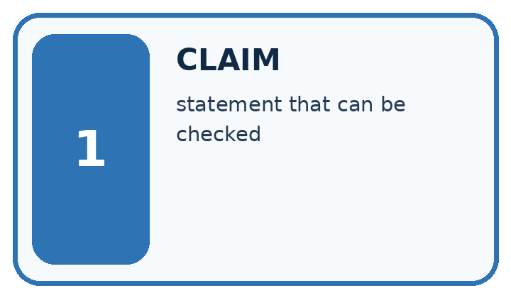
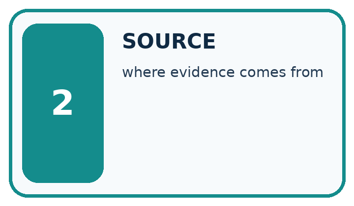
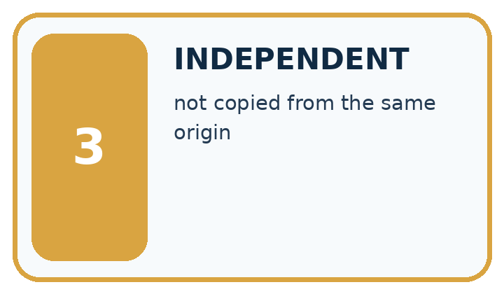
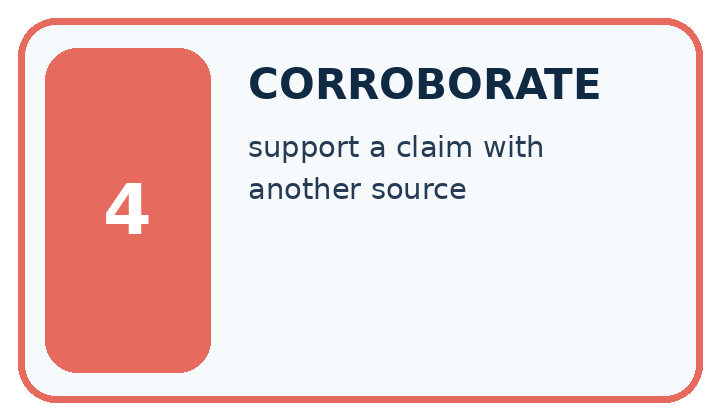
| Word | My own example | Not this / boundary |
|---|---|---|
| claim | A statement that can be examined using evidence and reasoning. | |
| source | The record, person or material from which information is obtained. | |
| independent | Produced or assessed without the specific influence being excluded; state whether this means uncoached work or separate test data. | |
| corroborate | Support a claim with additional relevant evidence, ideally independent of the first source. |
Words used in the closer explanation
| Word | Meaning |
|---|---|
| Entailment | Whether the cited passage supports the specific claim |
| Citation coverage | Which claims include source references |
| Link validity | Whether a source reference resolves to the intended record |
Student lesson · 6 of 18
Follow a worked example
Follow the worked trace for Evidence and Sources, predict a step, then compare with its explanation.
WORKED EVIDENCE
Reason Step by Step
Predict first. Then check each step. A correct answer without visible reasoning is incomplete evidence.
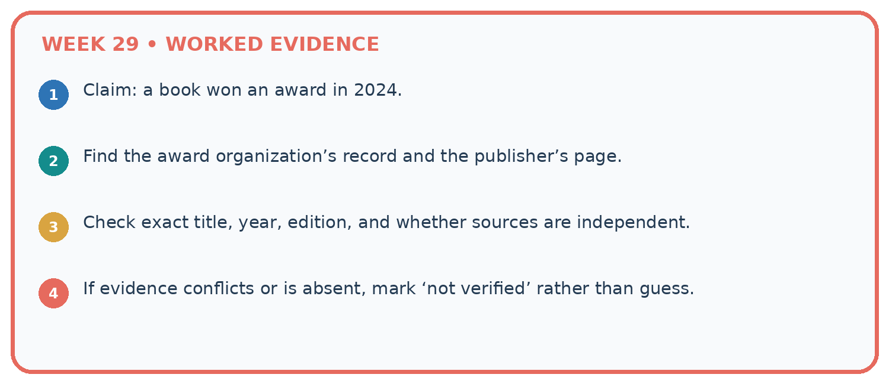
1. Claim: a book won an award in 2024.
2. Find the award organization’s record and the publisher’s page.
3. Check exact title, year, edition, and whether sources are independent.
4. If evidence conflicts or is absent, mark ‘not verified’ rather than guess.
Recalculate, retrace, or restate the reasoning in your own representation:
CHECK Did the evidence answer the exact question? Did the total, path, or source record stay consistent?
A closer explanation
An answer has four factual claims. Three have citations, but only two are supported by their cited passages. All links exist.
Claim support is 2/4=50%; citation presence is 3/4=75%; link existence among three citations is 3/3. These measure different failures.
Worked explanation · Evidence and Sources
Compare the intermediate evidence with the final statement. Explain why each number or decision follows from the stated inputs.
The conclusion belongs to this scenario and procedure; changing the inputs, evaluation population or authority can change what it establishes. Retain the raw record so a later revision can be compared honestly.
Learn from the worked case
Cover the result before checking it. Say what is given, choose the procedure, and follow one step at a time. Then uncover the result and explain your first mismatch. Ask why a step is allowed, not only what number it produces.
A pictorial worked case: Evidence and Sources
A fictional catalogue answer contains three factual statements and cites existing records.
The facts we will use
Supplied facts
Record R: book Ocean Maps has 80 pages and is available on shelf 2.
Supplied facts
Claims: 80 pages [R]; shelf 2 [R]; suitable for every child [R]. All three citations resolve to R.


Read the picture one step at a time
Why this result follows
Why the result follows
An existing citation is not automatically evidence for every nearby sentence. Read the cited passage and compare its exact scope with the claim. The universal suitability statement extends beyond what R says.
Remove or qualify unsupported content; adding more copies of the same link does not create the missing evidence.
What this example does not establish
Keep the stated limit
Source support is relative to supplied records; those records can themselves be incomplete, outdated or incorrect.
Keep the stated limit
Read the labelled picture: Why is the original answer not fully supported despite having citations on every claim?
Keep the stated limit
Change one thing: Change the third claim to “the record does not assess suitability”. Predict the result before checking the explanation. What remains the same?
Student lesson · 7 of 18
Find and repair a mistake
Find the unsupported step in the Evidence and Sources claim and explain a repair using the supplied evidence.
Find the first error
ERROR DETECTIVE
Compare → Diagnose → Repair
Do not patch the answer. Find the earliest unsupported assumption, wrong step, or weak evidence.
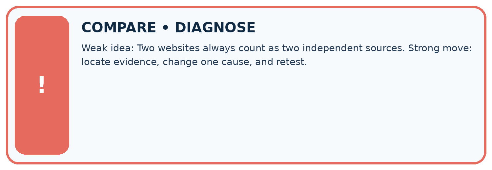
| Evidence record | Expected | Actual | Likely cause / next test |
|---|---|---|---|
| normal case | works | ||
| boundary case | stated rule | ||
| missing input | safe response | ||
| fresh transfer | generalizes |
Repair one cause. Why is this repair better than changing several things?
A closer explanation
Check the claim against the facts
Complete the supported workbook tasks before attempting W4 independently. Record any hints or help used. After feedback, use the teacher's fresh retry rather than copying the earlier answer.
For a project, select a relevant new case, predict the outcome from the declared rule and preserve the result alongside any revision.
Student lesson · 8 of 18
Practise together
Practise Evidence and Sources with support, then explain the deciding step in your own words.
LOGIC STUDIO
Trace Before You Run
Block code, pseudocode, tables, and diagrams are different ways to expose the same reasoning.

SET evidence_record PREDICT expected_result RUN one normal case and one boundary case COMPARE actual_result with expected_result IF different: locate first cause; change one factor; RETEST EXPLAIN result, limitation, and next safe step
Trace one input. Which line changes the state or chooses a path?
A closer explanation
Citation counts do not establish truth beyond the supplied sources or the correctness of uncited claims.
A useful check asks what would make the reasoning fail. Distinguish a failure to execute the declared procedure from a weakness in the procedure itself.
The first may require a correction; the second requires an explicitly revised method and new evidence. Preserve unsuccessful cases so an improved result cannot hide the original problem.
Practise with less help: Trace the worked case
Use workbook W2 for the connected example “Claim support and citation evaluation”. First fill the input and rule boxes. Try the middle steps before asking for a hint. After a hint, try the next step yourself.
| Plan | Do | Check |
|---|---|---|
| What is given? Which rule or procedure applies? | Record each intermediate step. | Does the result follow? What remains unknown? |
Explain your trace to a partner. Your partner points to one step to check. Swap roles on the next case. Each person writes their own explanation.
Check your reasoning
Use the worked case for Claim support and citation evaluation. Proposed explanation: “The worked result establishes every future case”. Decide whether this explanation is supported.
Point to the step or supplied fact that decides; explain your repair if needed.
Answer on your own before discussion. If you are unsure, say which step you need help with.
Explain the picture
Why is the original answer not fully supported despite having citations on every claim?
This is supported practice. Keep the separately named independent case for an attempt before feedback.
Student lesson · 9 of 18
Run the investigation
Investigate Evidence and Sources. Record the prediction, actual observation or labelled paper trace, explanation and next test separately.
EVIDENCE LAB
Predict → Test → Record → Explain
Keep expected and actual results separate. Surprises are useful data when recorded honestly.
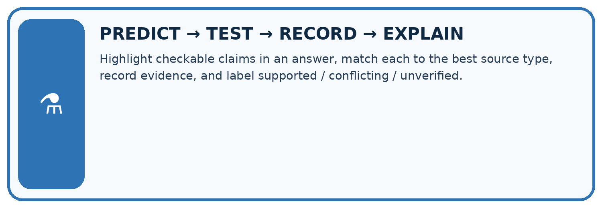
Highlight checkable claims in an answer, match each to the best source type, record evidence, and label supported / conflicting / unverified.
| Test / input | Prediction | Actual | Evidence / calculation | Change or keep? |
|---|---|---|---|---|
| normal | ||||
| boundary | ||||
| missing | ||||
| fresh transfer |
What did the hardest test teach you that the normal test did not?
Plan → try → check
Before trying: what do I expect, and why? While trying: which step could first go wrong? Afterwards: what did I actually observe, and what should change? Keep “not run” if you only traced the procedure.
Student lesson · 10 of 18
Build your understanding
Move from recall to tracing, diagnosis and transfer in Evidence and Sources. Explain why each step is justified.
MASTERY
From Knowing the Word to Owning the Idea
Move upward only when you can produce evidence without copying the worked example.

1 • NAME: Define the concept without repeating the textbook.
2 • TRACE: Show the information, state, branch, calculation, or evidence path.
3 • APPLY: Solve a different example independently.
4 • CHALLENGE: Find a boundary case, counterexample, or unfair outcome.
5 • EXPLAIN LIMITS: Say when the result should not be trusted or used alone.
My strongest evidence of independent understanding:
Student lesson · 11 of 18
Connect your project
Apply this week’s idea to Transparent Book Recommender. Keep an annotated decision and the evidence supporting it.
CUMULATIVE PROJECT
Transparent Book Recommender
Every week adds one inspectable piece. The system must show how it reached a result.
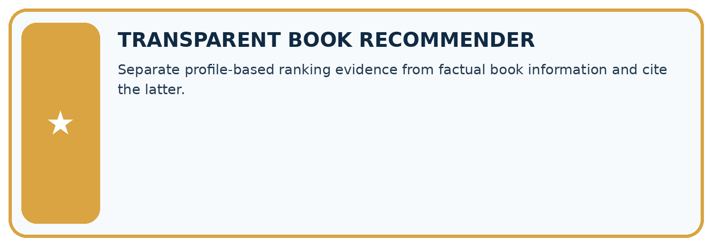
THIS WEEK’S CHECKPOINT Separate profile-based ranking evidence from factual book information and cite the latter.
Trace the system
SYSTEM MAP Reader need → allowed inputs → transparent rule or score → ranked candidates → explanation → test record → human decision
What will you add, change, or verify in the project this week?
What should remain under human control?
Responsible design
RESPONSIBLE DESIGN Collect only necessary information. Show uncertainty and limits. Never confuse a ranking with a fact about a person.
Evidence for your project
Attach source IDs to recommender explanation facts and separately audit whether each source supports its precise statement.
Student lesson · 12 of 18
Show what you know
Use a genuinely new case for independent evidence. Previously discussed examples remain practice; use the separately named independent case before feedback.
Independent evidence
INDEPENDENT MASTERY PROOF
Explain • Transfer • Test • Defend
Complete this page without copying the worked example. Your reasoning matters more than decoration.
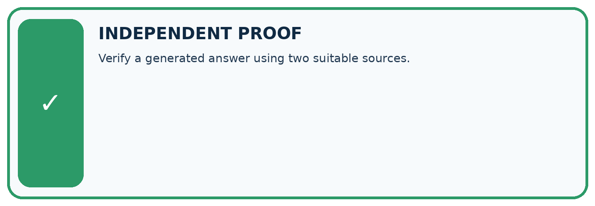
Try a more demanding case
CHALLENGE Verify a generated answer using two suitable sources.
1. My fresh example, trace, calculation, or design:
2. My evidence that it works (include a boundary or missing-data case):
3. One limitation, fairness concern, or situation needing human review:
Check your explanation
SELF-CHECK □ I explained the mechanism □ I used evidence □ I tested a fresh case □ I named a limitation □ I can answer ‘why?’
Student lesson · 13 of 18
Study a complete case
Revisit the complete Evidence and Sources case for supported practice. Repeated examples do not become fresh assessments.
Week 29 Worked case
Use the supplied details to practise the weekly concept before attempting the independent question. This case extends the illustrated lesson.
The situation
An answer says 80 pages, but the catalogue for that edition says 120.
The question
What evidence guides correction?
Worked explanation
Check the exact edition and authoritative catalogue record. Record the supporting source.
Explain it in your own words
Which detail supports the answer, and why does it matter?
Trace the supplied case visually
Check the claim against the exact edition
| Evidence or stage | Value or result |
|---|---|
| Answer | 80 pages |
| Catalogue | 120 pages for this edition |
| Resolution | Verify edition and cite the correct record |
An answer says 80 pages, but the catalogue for that edition says 120.
What evidence guides correction?
Check the exact edition and authoritative catalogue record. Record the supporting source.
Student lesson · 14 of 18
Try a new case independently
Attempt the reserved new case before feedback. Record support; the earlier examples below remain additional practice.
Independent case: Apply a new case independently
Five claims; four cited; three supported by cited passages; one cited ID is nonexistent. Compute support and citation presence and explain link limits.
Attempt this case before feedback. Record any help. Earlier examples below are further practice; a case already practised with feedback cannot establish fresh transfer.
Week 29 Independent application
Close the worked explanation. Apply the idea to this different question without copying.
An answer cites a page about opening hours to support a claim about book prices. Is a citation enough? What must be checked?
My answer, with a trace, calculation or supporting evidence
Create and test
Change one relevant detail. Predict the result before testing. Include a boundary or missing-information case when it helps reveal a limit.
My changed input and expected result
Connect to your project
Separate profile-based ranking evidence from factual book information and cite the latter.
The evidence I will keep
Your teacher has the independent answer and scoring criteria. Complete the matching workbook week to keep your practice evidence together.
Transfer practice from the original programme
Two catalogue records list 96 and 112 pages for a title. A helper averages them and reports 104. Explain the mistake and a better verification process.
Use feedback to improve
Attempt the independent case before hints. Record whether you worked alone, used a hint or followed a model. After feedback, fix the first unsupported step and explain why it changed.
A later check uses a changed case, not a copied answer.
Student lesson · 15 of 18
Your lesson route
Use this map to navigate Evidence and Sources, connect the goals to tasks and keep one evidence record for each attempt.
Start with this question: A fictional catalogue answer contains three factual statements and cites existing records.
| By the end, I can | How I will show it |
|---|---|
| Explain the mechanism and terminology of claim support and citation evaluation | Explain the deciding step, show a trace or test, and state one limit. |
| Apply the stated procedure to a new case with a traceable result | Explain the deciding step, show a trace or test, and state one limit. |
| Identify an assumption or limitation and design a revealing follow-up | Explain the deciding step, show a trace or test, and state one limit. |
Remember → watch and explain → try with help → investigate → try independently → keep project evidence. Your teacher may spread this lesson across several classes.
Keep your first prediction. Compare it with what the evidence shows and explain any change.
Student lesson · 16 of 18
Finish and return
Explain Evidence and Sources without notes, identify a remaining question and plan a later check with a changed case.
Close your notes. Explain this goal in your own words: Explain the mechanism and terminology of claim support and citation evaluation
If you are unsure, return to the worked picture and explain one arrow. If you are ready, change an input or assumption and justify your prediction.
Save your workbook evidence. At the next review, try a different case before opening your old answer.
Student lesson · 17 of 18
Supported practice, repair and portfolio
Attempt supported questions before using hints or feedback. Review a missing building block, then keep the completed work.
Use this supported practice once, in the browser or on paper. Keep the reserved independent assessment for a separate first attempt before teacher feedback.
A fictional catalogue answer contains three factual statements and cites existing records.
Practice 1: explain the deciding evidence
Which labelled step matches this detail? Citation presence 3/3; link validity 3/3; supported claims 2/3.
1. Check exact source support
2. Check links
3. Report separately
4. Break into claims
Hint · try first
Hint if needed: Read the steps in the pictorial case. Match the supplied detail to the stage that performs or records it.
Feedback · compare after trying
After your attempt, compare with the supported explanation: Report separately Citation presence 3/3; link validity 3/3; supported claims 2/3. An existing citation is not automatically evidence for every nearby sentence.
Read the cited passage and compare its exact scope with the claim. The universal suitability statement extends beyond what R says.
Remove or qualify unsupported content; adding more copies of the same link does not create the missing evidence.
Practice 2: explain the deciding evidence
Changed case · predict first
Changed-case practice: Change the third claim to “the record does not assess suitability”. Which conclusion is supported by the supplied facts?
1. That statement accurately describes the supplied record’s limits.
2. This one example guarantees correct results for every future input.
3. We can decide the result without examining the changed input or the procedure.
Hint · try first
Hint if needed: Use the changed condition and the deciding step in the pictorial trace. The answer must say what follows from those facts.
Feedback · compare after trying
After your attempt, compare with the supported explanation: That statement accurately describes the supplied record’s limits. R gives pages and shelf only; it contains no suitability assessment.
Repair a missing building block
Review Prompt Experiments (ai-2/28). Goal: Explain the mechanism and terminology of controlled prompt experiments. Short practice: Name the case P passes and Q fails, and explain why it matters..
Return to this week and explain what you changed.
Review Image and Voice Pipelines (ai-2/26). Goal: Explain the mechanism and terminology of speech pipelines and multimodal evidence.
Short practice: Which stage first fails, and why should the faulty transcript not be silently overwritten?. Return to this week and explain what you changed.
Review Recommendation Scores (ai-2/23). Goal: Compute a weighted score. Short practice: Why does B not become the winner when its score is largest?. Return to this week and explain what you changed.
Keep your completed work
Use Download completed work in the hosted lesson to export your answers, reflections, practice feedback and code-run evidence. Open the HTML copy to read or print it.
Drafts stay in this browser when storage is available; clear drafts on a shared device.
Student lesson · 18 of 18
Visual concept journey
Explain each Evidence and Sources graphic using its labels, deciding evidence and relevant limitation.
01. Evidence and Sources: the case
![A fictional catalogue answer contains three factual statements and cites existing records. Supplied facts: Record R: book Ocean Maps has 80 pages and is available on shelf 2. Claims: 80 pages [R]; shelf 2 [R]; suitable for every child [R]. All three citations resolve to R.](../assets/academy-story-ai-2-29-01.png)
A fictional catalogue answer contains three factual statements and cites existing records. Supplied facts: Record R: book Ocean Maps has 80 pages and is available on shelf 2.
Claims: 80 pages [R]; shelf 2 [R]; suitable for every child [R]. All three citations resolve to R.
Point to the given fact that matters most. Explain why it matters.
02. Follow the deciding steps

Break into claims: Count three factual claims rather than treating the answer as one blob. → Check links: All three citation links resolve to the intended R. → Check exact source support: R supports page count and shelf, not universal suitability. → Report separately: Citation presence 3/3; link validity 3/3; supported claims 2/3.
Point to each numbered stage and explain which recorded input it uses.
03. Different citation checks

Different citation checks. Units: percent. Citation presence: 100. Link validity: 100. Claim support: 66.66666666666667.
Read the labels and values. Explain the relationship the model shows.
04. Change one thing. Trace what follows.

Original case: Citation presence 3/3; link validity 3/3; supported claims 2/3. Changed condition: Change the third claim to “the record does not assess suitability”.
Expected result: That statement accurately describes the supplied record’s limits. Reason: R gives pages and shelf only; it contains no suitability assessment.
Predict before checking the worked changed-case result. Name what changed and what the supplied facts allow you to conclude.
05. Connect the explanation to its limit

An existing citation is not automatically evidence for every nearby sentence. Read the cited passage and compare its exact scope with the claim. The universal suitability statement extends beyond what R says.
Remove or qualify unsupported content; adding more copies of the same link does not create the missing evidence.
Limit: Source support is relative to supplied records; those records can themselves be incomplete, outdated or incorrect.
Explain the case, then point to a limit on the claim.
06. Make the idea visible in your project

Attach source IDs to recommender explanation facts and separately audit whether each source supports its precise statement. Draw your input, deciding step, result and limit.
Supported question: Why is the original answer not fully supported despite having citations on every claim?
Draw your project trace and justify the deciding step using evidence.